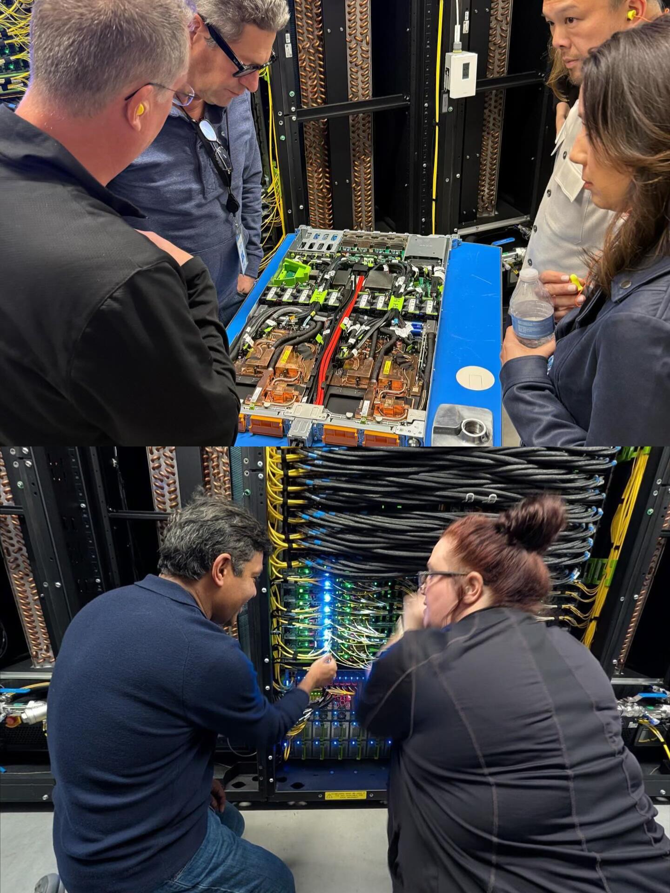
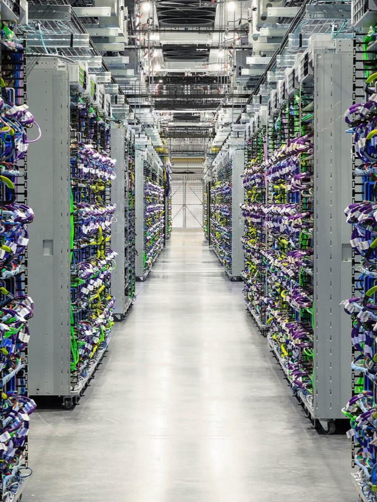

Renewable Energy
Site-led renewable generation and power infrastructure planning designed around real operating demand.
EXPLORE →
ENERGY-LED DIGITAL INFRASTRUCTURE
TerraHash Energy is developing an integrated infrastructure platform connecting renewable power, storage, digital systems and operating intelligence — built around the physical realities of energy.
WHAT TERRAHASH BUILDS
We approach digital infrastructure from the power layer outward — evaluating sites, energy resources, physical systems and operating data as one connected development model.
Site-led renewable generation and power infrastructure planning designed around real operating demand.
EXPLORE →Storage, electrical and interconnection strategies that support resilient infrastructure operations.
EXPLORE →Purpose-built compute and data environments aligned to available power and project conditions.
EXPLORE →Monitoring, data and analytics designed to improve visibility across infrastructure and operations.
EXPLORE →END-TO-END ADVANTAGE
TerraHash is designed around the full infrastructure lifecycle rather than a single technology product.

INTEGRATED PLATFORM
Our platform thesis begins with real energy assets and infrastructure. Data, intelligence and digital applications are added where they can improve transparency, operating visibility and long-term infrastructure value.
EXPLORE TERRAHASH
Explore the parts of the TerraHash platform most relevant to projects, technology, market research and strategic relationships.

Energy, storage, digital infrastructure and operating intelligence.

Research across energy, digital infrastructure and market conditions.

Verified records and digital applications grounded in physical assets.

Our development thesis, growth logic and strategic approach.
REAL-WORLD EXECUTION
Projects move from opportunity to operation through disciplined site work, power planning, engineering and long-term performance management.

LATEST FROM TERRAHASH
Follow TerraHash Energy as we develop our platform, evaluate infrastructure opportunities and share perspectives across energy and digital systems.

Our newsroom brings together company developments, infrastructure perspectives and the market forces shaping energy-led digital growth.
Visit News Center →
BUILD WITH TERRAHASH
Talk with TerraHash Energy about project development, energy infrastructure, technology collaboration or strategic capital.